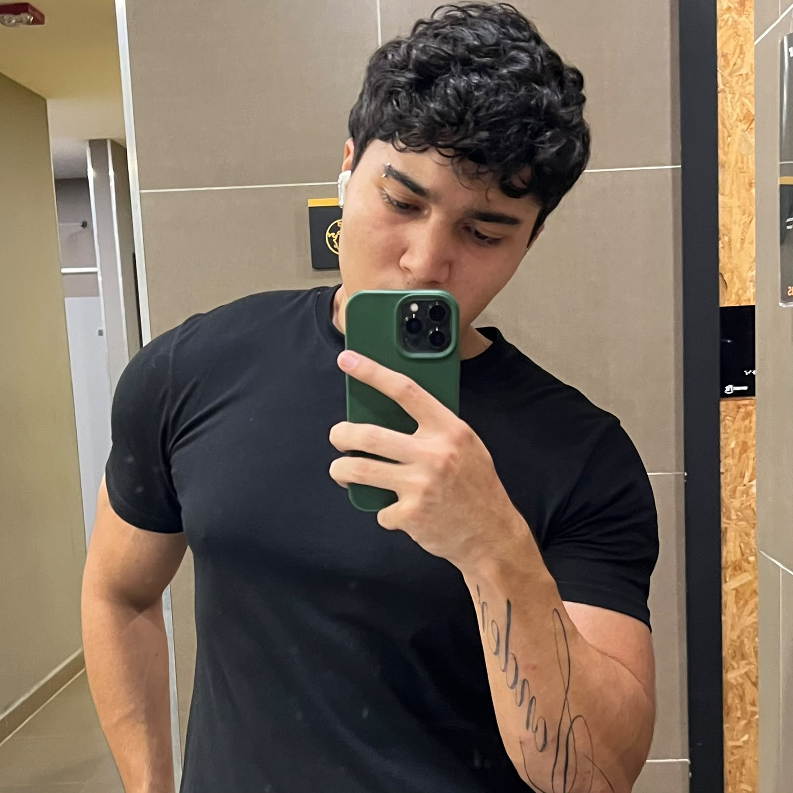

PROGRAMADOR
☎ +57 3045218872
✉ gabrielrodriguezvqz@gmail.com
📍 Barranquilla, Colombia

Estudiante de Ingeniería de Sistemas en la Universidad Libre, apasionado por el desarrollo backend y frontend de soluciones tecnológicas y análisis de datos. Con orientación a resolver problemas, busco una posición como practicante para aplicar conocimientos en programación y bases de datos, contribuyendo al éxito de proyectos, departamentos de TI y tecnologías emergentes. He desarrollado proyectos utilizando Python y Java para el desarrollo de aplicaciones, junto con MySQL como sistema de gestión de bases de datos, fortaleciendo mis habilidades técnicas y mi capacidad para ofrecer soluciones funcionales. Soy apasionado por la atención al cliente y me enfoco en brindar una experiencia satisfactoria que genere lealtad, no solo por los productos, sino también por los servicios.
Ingeniería en Sistemas
Universidad Libre - Sede Centro
Actualidad · Barranquilla
Bachillerato Académico
Colegio Nuestra Señora del Pilar
02/2017 – 11/2023 · Barranquilla
Curso de Python de 0 a Mid
Fundación Código Abierto
06/2025 – 08/2025 · Bquilla/Colombia
Español — Nativo/Bilingüe
Inglés — Avanzado
Como freelancer contratado por Alfonso Areiza, brindé soporte y atención personalizada a clientes, ofreciendo soluciones tecnológicas adaptadas a sus necesidades. Me encargué de la comunicación directa con los usuarios, resolución de incidencias y acompañamiento durante el uso de los servicios, garantizando una experiencia satisfactoria y fortaleciendo la relación cliente–proveedor mediante una atención ágil, empática y orientada a resultados.
Responsable de la atención al cliente, toma de pedidos y entrega de alimentos y bebidas, asegurando una experiencia de servicio eficiente y satisfactoria. Colaboración con el equipo de cocina y barra para optimizar el flujo de trabajo y garantizar la calidad del servicio. Orientación al cliente y resolución de incidencias de forma ágil y proactiva.
Conocimientos básicos en desarrollo web con HTML y programación en Python. Manejo intermedio de GitHub y conocimientos intermedios-avanzados en Java. Experiencia avanzada en MySQL y Microsoft Excel para la gestión, organización y análisis de información.